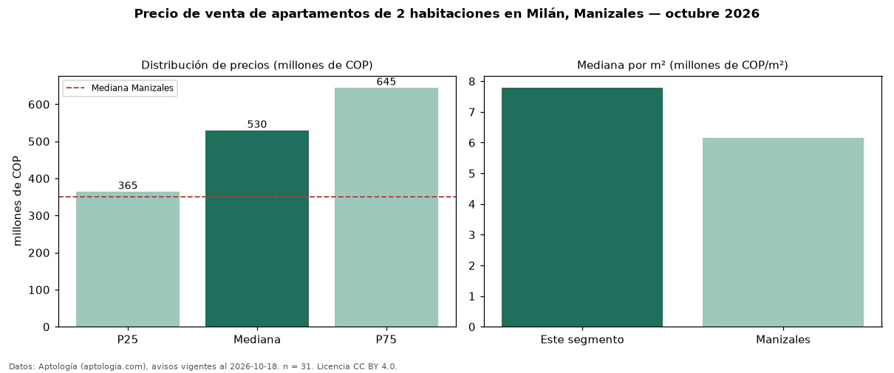

Precio de venta de apartamentos de 2 habitaciones en Milán, Manizales — octubre 2026
En Milán, Manizales, la mediana de precio de venta de apartamentos de 2 habitaciones es COP 530 millones, según 31 avisos vigentes. Eso es 51 % por encima de la mediana de Manizales para apartamentos de 2 habitaciones (COP 350 millones). Por metro cuadrado, la mediana es COP 7,79 millones/m² (n = 31 avisos con área), 26 % por encima de Manizales (COP 6,17 millones/m²). Son 21 % de los 150 avisos de apartamentos en venta de la zona, cuya mediana general es COP 630 millones (−16 %). El área mediana anunciada es 68 m². La administración mediana declarada es COP 370.000 al mes (n = 27). El estrato más frecuente es 6 (87 % de los avisos con estrato). La mitad central de los avisos va de COP 365 millones a COP 645 millones (razón 1,8), una dispersión moderada. Datos: Aptología (aptologia.com), CC BY 4.0 — https://www.aptologia.com/venta/manizales/milan. Archivos: PDF, CSV con las cifras y gráfica PNG.

| Avisos únicos | 31 |
|---|---|
| Percentil 25 | COP 365.000.000 |
| Mediana | COP 530.000.000 |
| Percentil 75 | COP 645.000.000 |
| Mediana por m² | COP 7.794.117 |
Fuente: avisos vigentes de portales inmobiliarios recopilados por Aptología, deduplicados (mínimo 30 avisos únicos por celda). Precios pedidos, no cerrados. Fecha: 2026-10-18.